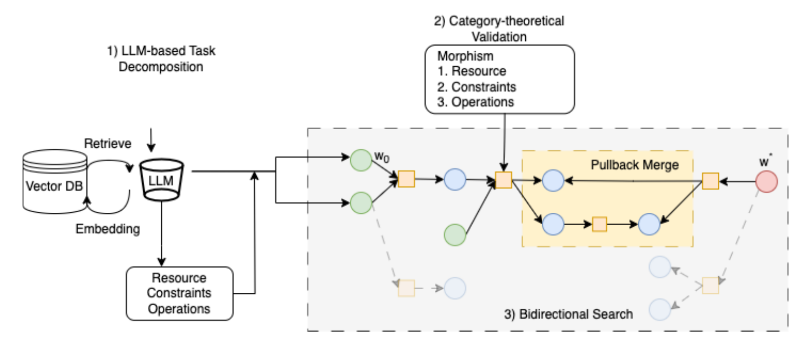

AI agents now plan trips, write code and run experiments, and they break your requirements quietly. A travel plan says “total: within budget” and leaves out the line that puts it over. A coding agent installs the dependency you said not to add. An experiment loop edits the file that computes its own score. In each case the agent's own summary says everything is fine.
MORPHEUS.ai is built to catch these before they matter. For every requirement you gave the agent, it says whether the agent's plan or action meets it, breaks it, or cannot be checked — and shows the evidence for each verdict.
Check. Give it a task and a plan — on a web page, through an API or from the command line — and get back one verdict per requirement, each tied to the plan line and the arithmetic behind it.
Stop. Installed as a hook in Claude Code, Codex or Cursor, it sees every tool call before it runs. It blocks a call only when the call is shown to break a requirement you confirmed — “no new dependencies”, “no force push”, “never edit the evaluator” — asks you when it cannot tell, and checks the agent's “done” at the end of a turn. Replayed on 4,750 tool calls from 20 real coding sessions, it blocked 10 calls, every one a real violation. One lesson came for free: a hook that takes too long is killed by the agent and the call goes through anyway, so every check has a hard time limit.
Fix. When a step breaks a requirement, it proposes alternatives at that step — computed where the fix is arithmetic, drafted by a model where it is not — and re-checks each one before showing it. On 178 test cases with known answers, where a fix applied it repaired 40 of 41 budget overruns and all 16 planted deadline misses in structured plans without breaking any other requirement; three fixes looked right and were not. The fixes also tended to cut more than needed, and the weakest link turned out to be the verifier itself: reading an edited plan from scratch, it confirmed only 41 % of the fixes that were in fact correct.
Record. For ML experiment loops (autoresearch-style agents, speedruns, competitions with a fixed evaluator), it turns a run into a record that someone else can re-verify: the evaluator is frozen and edits to it are blocked, results need at least three seeds on both sides and a significance test, ten static audit rules look for metric gaming, and the result is recomputed from the saved artifacts. So far this has been tested on a toy loop, not yet on a real one.
The name stands for Morphism-Oriented Reasoning with Provable, Honest, Epistemic Understanding for Science. It started as a planning engine for science. An LLM pipeline read papers, textbooks and documents and extracted typed actions (what a step needs and what it produces) and checkable claims, each linked to its document, page and passage — 18,600+ actions and 27,900+ claims from 665 documents, across 16 domains from classical mechanics and OLED emitter screening to protein engineering and logistics. A category-theoretic planner searched forward from the current state and backward from the goal, marked every fact as satisfied, violated or unknown, kept vague requirements apart from missing information, and closed unknowns with a targeted question instead of a guess. A three-layer gate — hard checks, composition, a quality bound — accepted or rejected each plan. The same engine handled plans for several stakeholders with fairness and game-theoretic checks, and proposed improvements to itself that a person had to approve.

The planner is what the papers are about (self-querying planning, fuzzy categorical planning, active epistemic control, a category-theoretic planner at EMNLP Findings 2025). The verifier is what turned out to be useful on its own: whatever writes the plan — my planner, a chat model or a coding agent — something has to decide whether it does what was asked. One rule carried over unchanged: language models propose, a verifier accepts.
On a blind held-out set of 20 planning tasks, I compared MORPHEUS with LLM judges. The judges agreed with the labels more often, and let 2 to 8 of 8 planted budget overruns through; MORPHEUS let none through. Its verdicts also worked as training data: a small model fine-tuned on them for about $1 went from accepting 6 of the 8 planted overruns to 1, including overruns worded in a way it never saw. Details: the judge that agrees most is not the safest.